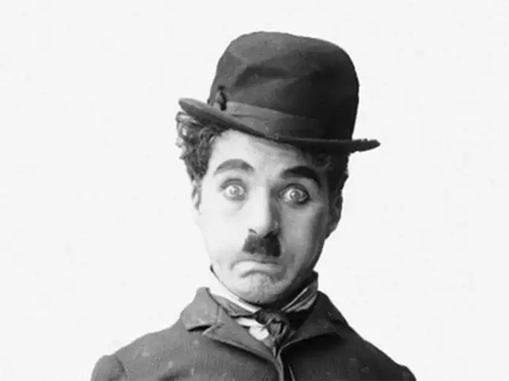

Charlie Chaplin
Considered to be one of the most pivotal stars of the early days of Hollywood,
Charlie Chaplin lived an interesting life both in his films and behind the camera.
He is most recognized as an icon of the silent film era, often associated with his popular character,
the Little Tramp; the man with the toothbrush mustache, bowler hat, bamboo cane, and a funny walk.

Chaplin